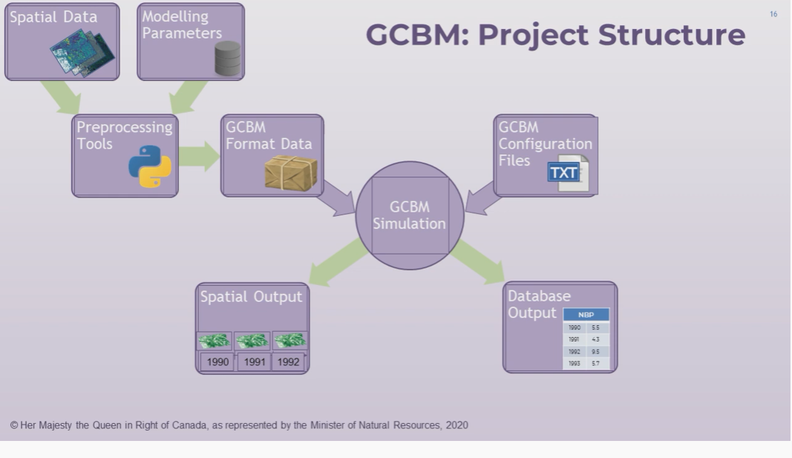

GCBM
Difference between the GCBM and FLINT
GCBM operates on the FLINT PLatform.
About the Modelling framework (Kind of input and output)
Refer to the video time stamp: 1.51 https://www.youtube.com/watch?v=xnJqNBIET7A&list=PL_WECUlMWiUmZYoPHNn6RnMSia5Naj5gE&ab_channel=mojaglobal
Structure of the GCBM
{kind=link}
Data Required for the GCBM
Minimum map of the inital forest state and forest age distrurbance.
Libaries of the CBM3
Refer to the video: https://www.youtube.com/watch?v=dAiGIH7AAvg&list=PL_WECUlMWiUmZYoPHNn6RnMSia5Naj5gE&index=3&ab_channel=mojaglobal
Output Generated by the GCBM
Refer to the video time stamp: 5.00 https://www.youtube.com/watch?v=3_F4LfSBlN4&list=PL_WECUlMWiUmZYoPHNn6RnMSia5Naj5gE&index=2&ab_channel=mojaglobal
GCBM: Standalone Project:
GCBM.Belize (Based on the Standalone Template)
Prerequisties
Refer to moja.global’s GCBM training video series before proceeding to run the model.
Description of contents
- documentation
Assorted GCBM-related documentation: Python snippets, configuration examples, database schema diagram.
- gcbm_project
The files needed to run GCBM - config files, SQL for retrieving parameters from the input database.
- input_database
The GCBM input database for the project which contains all of the non- spatial model parameters, plus the files needed to generate the input database using the Recliner2GCBM tool.
- layers
The spatial layers for the project, both the originals and the output of the tiler script which processes the original layers into the format used by GCBM.
- logs
The log files created by most of the pre- and post-processing tools as well as the GCBM.
- processed_output
Contains the fully-processed (analysis ready) output of the simulation: Spatial output in GeoTIFF format, and database output in SQLite format. Analysis ready tables containing various ecosystem indicators are the tables prefixed with “v_”.
- tools
- CompileGCBMResults - Python script for turning raw SQLite output database from
the model into a more user-friendly format that includes most of the indicators from CBM3 (NPP, NEP, pools, etc.).
- CompileGCBMSpatialOutput - Python script for turning raw GCBM spatial output
into final TIFF layers.
GCBM - The simulation model.
- Recliner2GCBM-[x86/x64] - Tool for preparing the SQLite input database for
GCBM, which holds non-spatial (or coarse spatially-referenced) model parameters. Use the x64 version and fall back to the x86 version if you don’t have the 64-bit MS Access driver installed.
The tool has both a GUI version to guide you through the process the first time, and a command-line version to update a database from a saved configuration, provided that the columns in the input data have not changed.
Tiler - Converts raster and vector layers into the format required by GCBM.
To run the project (the short version):
Set up your Python environment and make any necessary modifications to run_all.bat as described in documentationGCBM_Installation_Guide_2019_11_14.docx.
—
- To run the project (the detailed version):
- Install Python 3:
- If you have Python 3 already installed:
From the command prompt in toolspython_3_installer, type: install_modules_only (path to existing Python installation)
For example, if your computer already has 64-bit Python 3 installed in c:Python37: install_modules_only c:Python37
- If you do not have Python 3 installed:
From the command prompt in toolspython_3_installer, type: install_python
If you do not have MS Access installed, you will need to install a driver in order to connect to MS Access databases. The driver can be found in: toolspython_3_installerx64AccessDatabaseEngine_x64.exe
Install the Visual C++ Redistributable packages required to run the GCBM and related tools:
tools\VC_redist\2008\vcredist_x64.exe tools\VC_redist\2013\vcredist_x64.exe tools\VC_redist\2015\VC_redist.x64.exe tools\VC_redist\2017\VC_redist.x64.exe
Install the .NET framework 4.7.2 redistributable package required to run the Recliner2GCBM tool:
toolsVC_redistNDP472-KB4054530-x86-x64-AllOS-ENU.exe
Edit run_all.bat and set the GCBM_PYTHON path and PLATFORM variables in the USER CONFIGURATION section near the top to the correct values for your system.
Run run_all.bat, which performs the following preprocessing, simulation, and postprocessing steps:
- Run the tiler script
- batch file runs toolsTilertiler.py
- define all spatial layers needed for the simulation - can be
raster or shapefile: - bounding box - age - classifiers - disturbance events (optional)
crops all layers to a bounding box and reprojects to WGS84
processes layers into GCBM tile/block/cell format
- output is a number of zip files containing GCBM-format data plus
a json file containing metadata and an optional attribute table
- Prepare the input database using Recliner2GCBM
- runs the command-line version of Recliner2GCBM
(toolsRecliner2GCBM-[x86x64]Recliner2GCBM.exe) on the saved project configuration made by running the GUI tool (Recliner2GCBM-GUI.exe)
- note: the paths in the saved recliner2gcbm_config.json file are relative
to the location of the json file
- output is a SQLite database: gcbm_input.db which contains all of the
non-spatial data required to run the project - parameters taken from a CBM3 ArchiveIndex database: disturbance matrices, default climate data, etc.
- Update the GCBM configuration using toolsTilerupdate_gcbm_config.py -
automatically updates the GCBM configuration files based on the tiled layers: - scans for all of the tiled layers and adds them to the provider
configuration file
- sets the tile, block, and cell size in the config files so that
the model knows the overall resolution of the simulation (the lowest common denominator of all the tiled layer resolutions)
- updates the list of disturbance layers in the simulation based on
the DisturbanceLayer items in tiler.py
- updates the initial classifier set with the classifier layers tagged
in tiler.py
- Run the GCBM model: gcbm_projectrun_gcbm.bat
- project configuration is split between multiple files listed in
gcbm_projectgcbm_config.cfg
- data source configuration (spatial layers + SQLite) is in
gcbm_projectprovider_config.json
- Run the compile results script:
toolscompilegcbmresultscompilegcbmresults.bat - turns the raw GCBM output database into a more user-friendly format
containing most of the familiar indicators from the CBM3 Toolbox
produces processed_outputcompiled_gcbm_output.db
- Run the compile spatial output script:
toolscompilegcbmspatialoutputcreate_tiffs.bat - generates tiff layers from raw GCBM spatial output - output is a tiff layer per indicator and timestep in processed_outputspatial
GCBM.Colombia (Based on the Standalone Template)
Before you begin
Refer to moja.global’s GCBM training video series before proceeding to run the model.
Description of contents
- documentation
Assorted GCBM-related documentation: Python snippets, configuration examples, database schema diagram.
- gcbm_project
The files needed to run GCBM - config files, SQL for retrieving parameters from the input database.
- input_database
The GCBM input database for the project which contains all of the non- spatial model parameters, plus the files needed to generate the input database using the Recliner2GCBM tool.
- layers
The spatial layers for the project, both the originals and the output of the tiler script which processes the original layers into the format used by GCBM.
- logs
The log files created by most of the pre- and post-processing tools as well as the GCBM.
- processed_output
Contains the fully-processed (analysis ready) output of the simulation: Spatial output in GeoTIFF format, and database output in SQLite format. Analysis ready tables containing various ecosystem indicators are the tables prefixed with “v_”.
- tools
- CompileGCBMResults - Python script for turning raw SQLite output database from
the model into a more user-friendly format that includes most of the indicators from CBM3 (NPP, NEP, pools, etc.).
- CompileGCBMSpatialOutput - Python script for turning raw GCBM spatial output
into final TIFF layers.
GCBM - The simulation model.
- Recliner2GCBM-[x86/x64] - Tool for preparing the SQLite input database for
GCBM, which holds non-spatial (or coarse spatially-referenced) model parameters. Use the x64 version and fall back to the x86 version if you don’t have the 64-bit MS Access driver installed.
The tool has both a GUI version to guide you through the process the first time, and a command-line version to update a database from a saved configuration, provided that the columns in the input data have not changed.
Tiler - Converts raster and vector layers into the format required by GCBM.
—
To run the project (the short version):
Set up your Python environment and make any necessary modifications to run_all.bat as described in documentationGCBM_Installation_Guide_2019_11_14.docx.
—
- To run the project (the detailed version):
- Install Python 3:
- If you have Python 3 already installed:
From the command prompt in toolspython_3_installer, type: install_modules_only (path to existing Python installation)
For example, if your computer already has 64-bit Python 3 installed in c:Python37: install_modules_only c:Python37
- If you do not have Python 3 installed:
From the command prompt in toolspython_3_installer, type: install_python
If you do not have MS Access installed, you will need to install a driver in order to connect to MS Access databases. The driver can be found in: toolspython_3_installerx64AccessDatabaseEngine_x64.exe
Install the Visual C++ Redistributable packages required to run the GCBM and related tools:
Install the .NET framework 4.7.2 redistributable package required to run the Recliner2GCBM tool:
toolsVC_redistNDP472-KB4054530-x86-x64-AllOS-ENU.exe
Edit run_all.bat and set the GCBM_PYTHON path and PLATFORM variables in the USER CONFIGURATION section near the top to the correct values for your system.
Run run_all.bat, which performs the following preprocessing, simulation, and postprocessing steps:
- Run the tiler script
- batch file runs toolsTilertiler.py
- define all spatial layers needed for the simulation - can be
raster or shapefile: - bounding box - age - classifiers - disturbance events (optional)
crops all layers to a bounding box and reprojects to WGS84
processes layers into GCBM tile/block/cell format
- output is a number of zip files containing GCBM-format data plus
a json file containing metadata and an optional attribute table
- Prepare the input database using Recliner2GCBM
- runs the command-line version of Recliner2GCBM
(toolsRecliner2GCBM-[x86x64]Recliner2GCBM.exe) on the saved project configuration made by running the GUI tool (Recliner2GCBM-GUI.exe)
- note: the paths in the saved recliner2gcbm_config.json file are relative
to the location of the json file
- output is a SQLite database: gcbm_input.db which contains all of the
non-spatial data required to run the project - parameters taken from a CBM3 ArchiveIndex database: disturbance matrices, default climate data, etc.
- Update the GCBM configuration using toolsTilerupdate_gcbm_config.py -
automatically updates the GCBM configuration files based on the tiled layers: - scans for all of the tiled layers and adds them to the provider
configuration file
- sets the tile, block, and cell size in the config files so that
the model knows the overall resolution of the simulation (the lowest common denominator of all the tiled layer resolutions)
- updates the list of disturbance layers in the simulation based on
the DisturbanceLayer items in tiler.py
- updates the initial classifier set with the classifier layers tagged
in tiler.py
- Run the GCBM model: gcbm_projectrun_gcbm.bat
- project configuration is split between multiple files listed in
gcbm_projectgcbm_config.cfg
- data source configuration (spatial layers + SQLite) is in
gcbm_projectprovider_config.json
- Run the compile results script:
toolscompilegcbmresultscompilegcbmresults.bat - turns the raw GCBM output database into a more user-friendly format
containing most of the familiar indicators from the CBM3 Toolbox
produces processed_outputcompiled_gcbm_output.db
- Run the compile spatial output script:
toolscompilegcbmspatialoutputcreate_tiffs.bat - generates tiff layers from raw GCBM spatial output - output is a tiff layer per indicator and timestep in processed_outputspatial